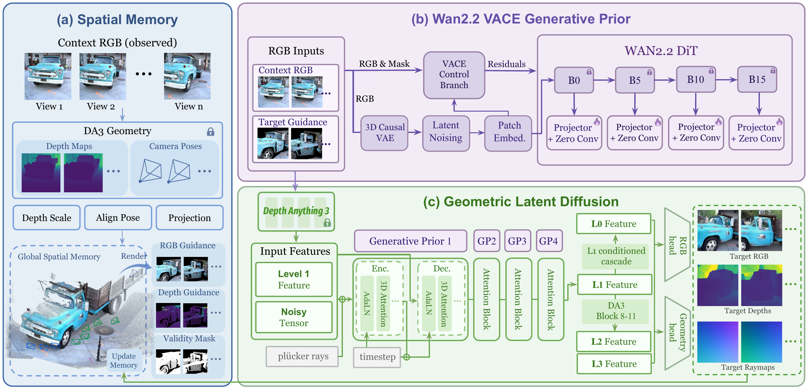
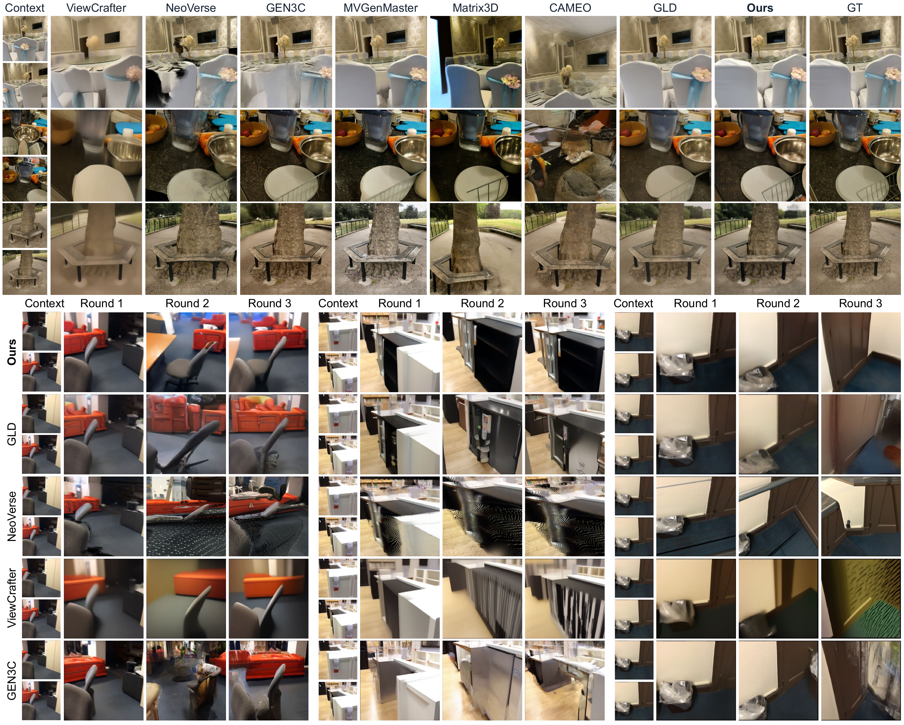
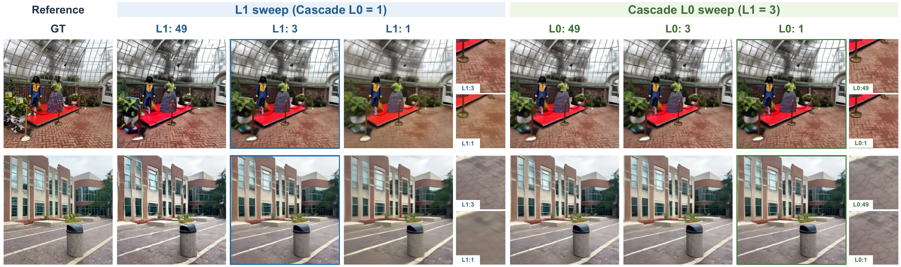

GeoVerse: World-Consistent Novel View Synthesis in Geometric Latent Space
TL;DR GeoVerse turns sparse images into world-consistent novel views by combining geometric latent diffusion, video generative priors, and persistent spatial memory.
What do we need for generation in geometric latent space?
Stronger generative ability
A geometric latent space provides strong structural priors, but limited training data can restrict its ability to complete unseen regions. We inject multilevel features from Wan2.2 VACE into geometric latent diffusion through a ControlNet-style adapter and expand training from 4 to 15 real and synthetic 3D datasets, enriching appearance priors and improving generalization across scenes and domains.
Video priors + 15 training datasetsLonger generation sequences
Consistency within a single inference pass does not ensure consistency across successive generations. We maintain a global colored point-cloud memory that accumulates observed and generated content and reprojects it into requested cameras as target-aligned guidance, allowing new views to build on a shared scene representation while completing unseen regions.
Persistent, target-aligned memoryFaster generation
High-step geometric latent diffusion can require over 100 seconds for a single inference pass. We apply reflow distillation to reduce sampling to four denoising updates: three at Level 1 and one in the Level 0 cascade. This reduces per-pass inference from over 100 seconds to under 10 seconds in our evaluation setting, while preserving visual detail.
Four denoising updates
Method
Full resolution
Qualitative comparisons
Full resolution
Few-step generation
Full resolution
Citation
@misc{ren2026geoverse,
title = {GeoVerse: World-Consistent Novel View Synthesis in Geometric Latent Space},
author = {Ren, Kerui and Lu, Tao and Xu, Linning and Jiang, Changjian and
Mu, Hunag and Shen, Chunhua and Yu, Mulin and Dai, Bo},
year = {2026},
url = {https://geoverse-nvs.github.io/}
}